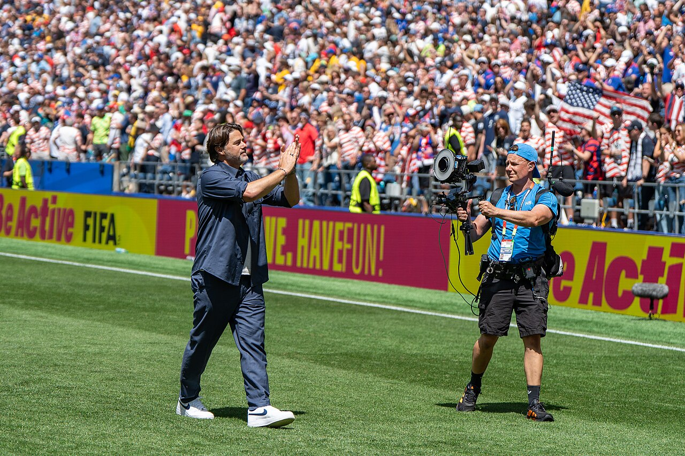
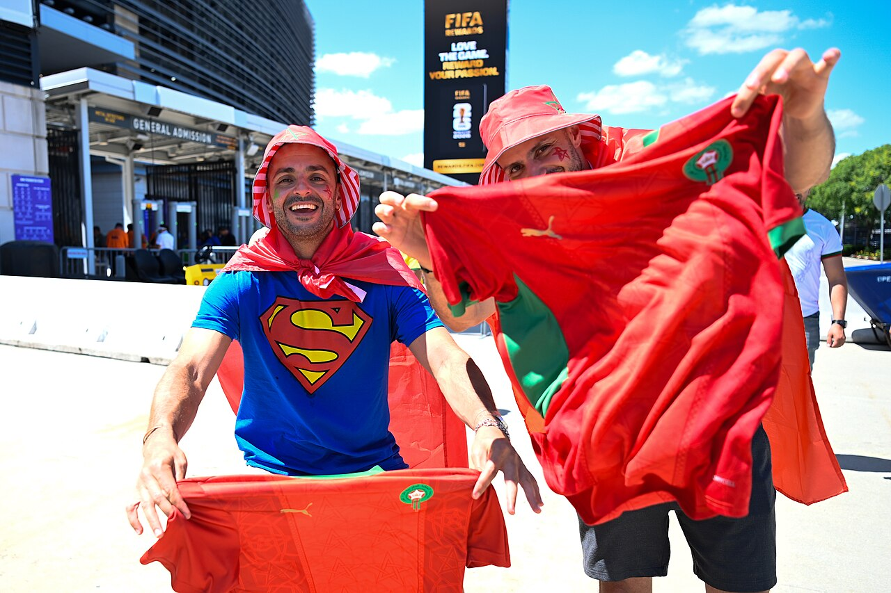

The Roster.
Pochettino announced his final 26 in New York on May 26. Every card from that day is still here, and each one now carries what the tournament actually was for that player. Notable omissions: Yunus Musah, Diego Luna, Cameron Carter-Vickers, Johnny Cardoso, Tanner Tessmann, Aidan Morris, Josh Sargent. Surprise inclusions: Gio Reyna, Alex Freeman, Alejandro Zendejas, Sebastian Berhalter. Three of those four surprises scored. Trust the coach.
The man who picked them.

Numbers that will stick.
Between the posts.
Tap any card. The front is the player. The back is what the summer did with them.
The May scouting cards, kept whole · goalkeepers
Matt Freese · GK · New York City FC · Likely #1. Freese has held the spot through the Gold Cup and the spring friendlies. Sharp shot-stopping, calm distribution. The Belgium and Portugal friendlies exposed the defense in front of him, not him.
Matt Turner · GK · New England Revolution. The veteran. 2022 World Cup starter. Returned to New England Revolution after his Premier League stint. Now serves as senior locker-room voice and No. 2 / No. 3 depth.
Chris Brady · GK · Chicago Fire. The young goalkeeper. MLS minutes with Chicago. Strong reach. The future of the position.
The back line.
The May scouting cards, kept whole · defenders
Chris Richards · CB · Crystal Palace · Starter if fit. The starting right centerback when healthy. Aerial dominance, ball-playing comfort, FA Cup form late in the season. An ankle injury on May 17 made him a tournament doubt; watch the friendlies. The most upside-y young CB in the pool.
Tim Ream · CB · Charlotte FC · Captain · 38. The grown-up in the room. 38 years old, wears the armband. Multiple World Cups. Left centerback. Reads the game three moves ahead.
Antonee Robinson · LB · Fulham · Starter. "Jedi." One of the fastest fullbacks in the world. Engine on the left flank. Late runs and crosses for days.
Sergiño Dest · RB · PSV · Returning from injury. Back on the roster after the long ACL recovery. If healthy and starting, USA's most attacking fullback. If not, Scally holds the spot.
Joe Scally · RB · Borussia Mönchengladbach. Two-footed, technically clean. Defensively first, attacking when invited. Likely starts at RB if Dest isn't full-go.
Miles Robinson · CB · FC Cincinnati. Backup CB. Aerial power, pace recovery. If injuries hit, the next man in.
Mark McKenzie · CB · Toulouse. Ligue 1 minutes. Comfortable left-footed CB. Useful for the 3-4-3 alternate when Pochettino goes three at the back.
Auston Trusty · CB · Celtic. Scottish Premiership minutes with Celtic. Big body, comfortable on the ball. Late-tournament rotation piece.
Alex Freeman · DEF · Villarreal · Surprise inclusion. Versatile defender at Villarreal in La Liga. Younger insurance piece. Surprise inclusion in the 26.
Max Arfsten · LB · Columbus Crew · Cover for Jedi. The second left-sided defender. Insurance if Jedi rolls an ankle.
The midfield.
The May scouting cards, kept whole · midfielders
Tyler Adams · DM · AFC Bournemouth · Captain class · Anchor. The defensive spine. The number 6. If he's healthy and starting, the midfield holds. If not, the team has to rebalance.
Weston McKennie · CM · Juventus · Box-to-box. Most physical midfielder in the squad. Aerial threat, late-arriving runs into the box. Versatile, can play higher or deeper depending on the matchup.
Sebastian Berhalter · CM · Vancouver Whitecaps · Surprise inclusion. MLS form earned him the call. Son of former USMNT head coach Gregg Berhalter. Likely cover for Adams.
Cristian Roldan · CM · Seattle Sounders. Veteran MLS midfielder. Two-way energy, tactical reliability. Bench piece, can step in across midfield roles.
Malik Tillman · AM · Bayer Leverkusen. Bayern academy, PSV breakthrough, Leverkusen this year. Big late-tournament asset if Pochettino needs an extra attacker.
Alejandro Zendejas · AM / W · Club América · Surprise inclusion. Liga MX standout at Club América. Eligibility switched from Mexico to USA. Surprise inclusion in the 26. Creative spark off the bench.
Brenden Aaronson · AM / W · Leeds United · Energy off the bench. Box-to-box energy. The reliable late-game injection. Doesn't always start but always changes the game when he comes on.
The attack.
The May scouting cards, kept whole · forwards
Christian Pulisic · LW / AM · AC Milan · The talisman. The engine, the face. Comes into the tournament in the worst form of his professional career. A glute issue shut down his Milan season early as a precaution. He needs the opener to go right. Set pieces, free kicks, corners all his. Penalties likely shared with Balogun.
Folarin Balogun · ST · AS Monaco · #9 Starter. The starting striker. Penalty taker. Needs sharper movement against deep blocks like Paraguay's. Ligue 1 minutes give him the level expected at a World Cup.
Tim Weah · RW · Marseille. Pace on the right. Defensive work rate. Tournament version of him will be on the wing or as a wing-back in the 3-4-3 alternate.
Gio Reyna · AM / W · Borussia Mönchengladbach · SURPRISE INCLUSION. Back in after a long absence from the squad. Pochettino's gamble. If healthy and right, an X-factor between the lines. If not, an expensive bench piece.
Ricardo Pepi · ST · PSV Eindhoven. Eredivisie minutes at PSV. Plan B striker. Different shape than Balogun: more box-presence, less linking.
Haji Wright · ST · Coventry City. The big-body alternative. Air-game asset. Late-game battering ram.
Notable omissions from the 26.
Yunus Musah (AC Milan), midfielder. The most surprising omission. Previously assumed lock-in, dropped from the final 26.
Diego Luna (Real Salt Lake), attacking midfielder. Massive cut after a strong Gold Cup. Reyna's inclusion came at his expense.
Cameron Carter-Vickers (Celtic), centerback. Recovering from a torn Achilles in October 2025. Not full-go for the tournament.
Johnny Cardoso (Real Betis), defensive midfielder. Pochettino went for ball-progressors over runners.
Tanner Tessmann (Olympique Lyonnais), midfielder. Lyon minutes but didn't fit the final shape.
Aidan Morris (Middlesbrough), midfielder. Out of the squad.
Josh Sargent (Norwich City), striker. Championship form but the four-forward shape went elsewhere.

Door photo: fans at the 2026 World Cup, East Rutherford, Jun 13 2026 · YantsImages · CC BY-SA 4.0 · Wikimedia Commons